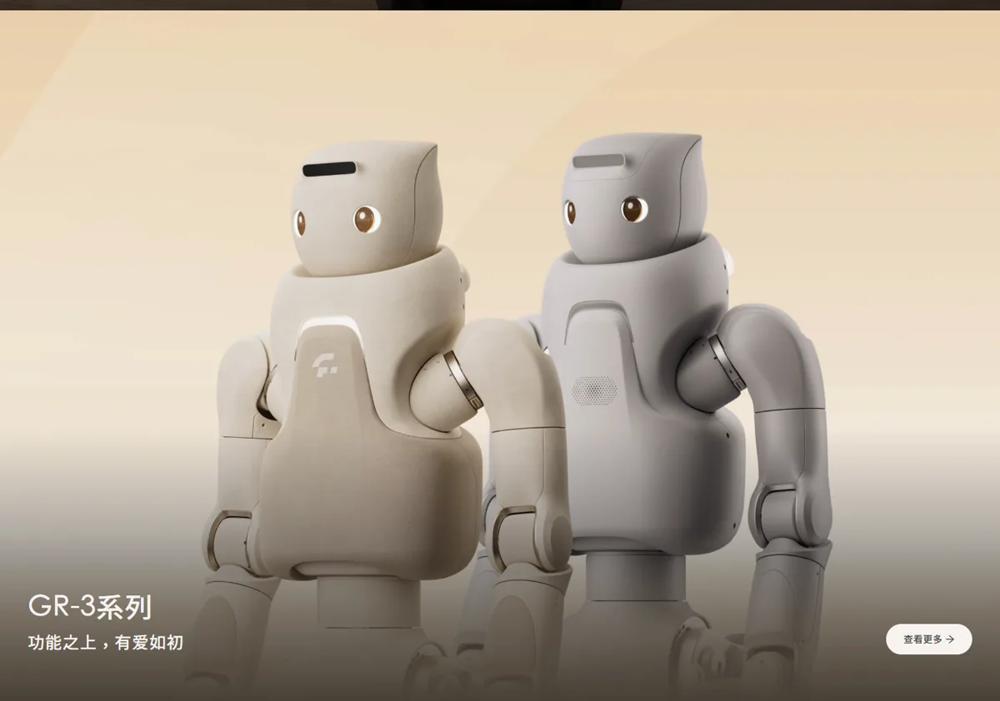
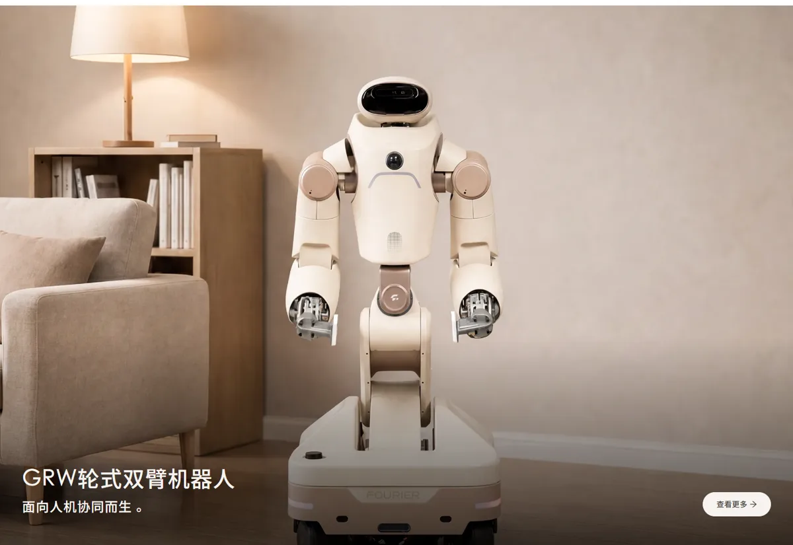
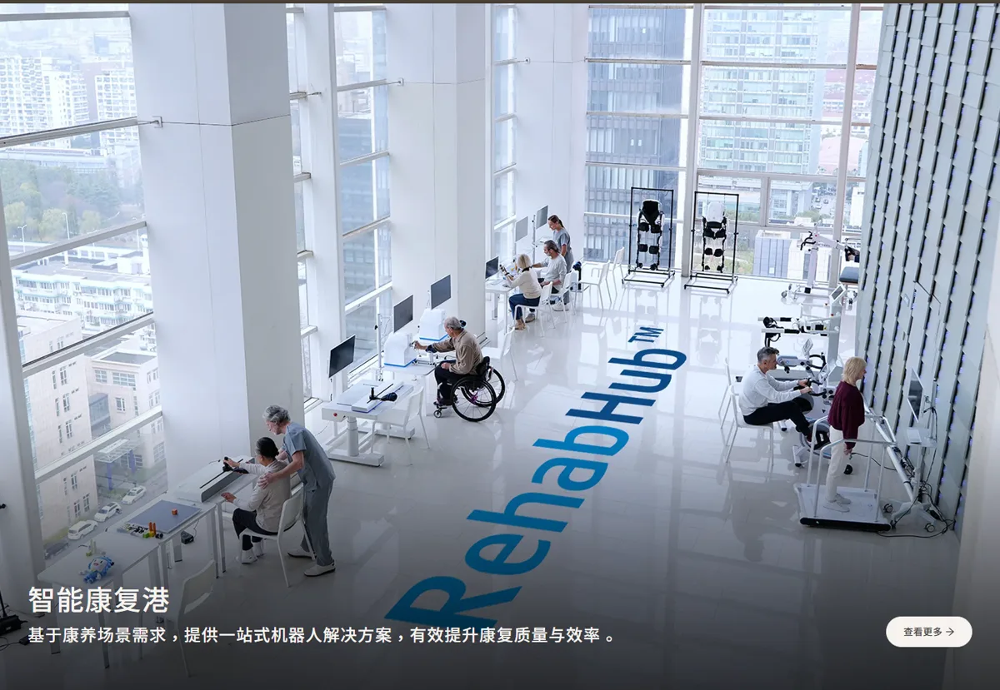

傅利叶上海傅利叶智能科技有限公司（Fourier）
从康复机器人做起的人形机器人公司：康复产品已服务 40 多个国家 2,000 多家机构，提供稳定现金来源；人形机器人从通用平台转向“有温度的陪伴”，GR-3 主打康养与家庭的 Care-bot。估值约 80 亿元，规模与资本热度都明显小于头部三家。
一页结论
- 康复业务是底盘：40 多款康复产品覆盖上肢、下肢、外骨骼、平衡训练与物理治疗，形成“智能康复港”整体方案S1S4
- 人形机器人转向康养陪伴：成立 10 周年时宣布把康养作为具身智能的下一阶段方向；GR-3 是首款 Care-bot，强调亲和、安全和情感交互S2S3
- 产品线向家庭延伸：WAIC 2026 发布轮式双臂 GRW、展示“具身之家”方案，桌面陪伴机器人 GR Nano 力争年内上市S5S6
- 规模偏小：2025 年双足人形目标交付仅 300 台；E 轮融资近 8 亿元，远低于银河通用、智元S2S7
- 开源与零部件：2025-04 发布开源人形机器人 Fourier N1，开放物料清单、图纸与装配指南；同时销售核心零部件S1S2
01公司介绍
| 项目 | 内容 |
|---|---|
| 公司 | 上海傅利叶智能科技有限公司，2015 年成立，创始人兼 CEO 顾捷S1S7 |
| 官网 | fftai.comS1 |
| 定位 | 官方称“全球领先的 AI 机器人企业”，产品理念“创新为本，可靠可及”S1 |
| 产品矩阵 | GRx 系列人形机器人、GRW 轮式双臂、智能康复港、伽利略系统、核心零部件、开源产品S1 |
| 融资 | 2025-01 E 系列两轮近 8 亿元（国鑫投资、浦东创投、张江科投、Prosperity7、钧山资本等）；2025-05 润阳科技拟投不超过 3 亿元，投前估值 80 亿元S2S7 |
| 国际化 | 设立新加坡傅利叶S1 |

02公司战略
傅利叶的打法是“用康复医疗养活人形机器人”，并把人形机器人的方向锁定在康养陪伴这一与主业相邻的场景。
- 以人为本的具身智能：CEO 顾捷称这是长期战略主线，并延续康复领域积累S2
- 瞄准康复治疗师缺口：顾捷认为有经验、能每天陪伴指导患者的治疗师严重不足，老龄化会扩大缺口S2
- 从机构走向家庭：WAIC 2026 设置“具身之家”展区，主打家庭生活空间S5S6
- 开源吸引开发者：Fourier N1 开放完整本体资源包S2
03产品定位与产品线
| 产品 | 定位 | 关键参数 / 状态 |
|---|---|---|
| GR-3 “猫猫头” | 首款 Care-bot 人形机器人，亲和、安全、情感交互S3 | 身高 165 cm、体重 71 kg、续航 3 小时、单手负载 3 kg、步速 5.5 km/h、55 自由度S3 |
| GR-3C “宇航员” | 配激光雷达与增强外壳，复杂环境下高精度作业S3 | 在售S3 |
| GRW | 轮式双臂辅助型交互机器人：康复训练、养老照护、仓储、轻工制造S8 | 稳定负载 16 kg、作业空间约 2 米、重复定位精度 0.1 mm、续航 4 小时、热插拔换电S8 |
| GR Nano | 桌面级私人情感陪伴机器人S5 | WAIC 2026 亮相，力争年内上市S5 |
| 智能康复港 | 40 多款康复产品组成的整体方案S4 | 已规模化应用S2S4 |

04主要功能与技术路线
05解决方案与场景
| 场景 | 方案 | 状态 |
|---|---|---|
| 康复医疗 | 智能康复港：多台机器人数据互联，覆盖神经、骨科、疼痛康复S4 | 2,000 多家机构和医院S1 |
| 养老照护 | GRW 力量辅助、递送、移载；GR-3 陪伴S3S8 | 早期落地（规模未披露） |
| 家庭陪伴 | “具身之家”与 GR NanoS5S6 | 展示与预备上市阶段S5 |
| 工业与仓储 | GRW 搬运、分拣、装配S8 | 官网列出的应用场景S8 |
| 科研开发 | Fourier N1 开源平台S2 | 已开源S2 |

06商业模式
| 模式 | 说明 |
|---|---|
| 康复设备销售 | 面向医院、康复机构销售康复机器人与整体方案S1S4 |
| 人形机器人销售 | GR-3、GRW 购买咨询S3S8 |
| 零部件与开源 | 核心零部件对外销售；开源产品S1 |
| 消费产品 | GR Nano 计划面向个人消费者S5 |
傅利叶的优势在于康复设备已有医院渠道和付费客户，人形机器人可以沿用这些渠道进入康养机构（分析意见）。
07上下游供应链与渠道
08主要客户与落地
09营收与财务
10落地痛点
11近期动态
12潜在风险分析意见
| 风险 | 表现 | 可能程度 |
|---|---|---|
| 边缘化 | 头部三家在出货、融资、模型上领先（分析意见） | 高 |
| 陪伴市场成熟度 | Care-bot 尚无成熟付费模式（分析意见） | 中 |
| 康复业务竞争 | 康复设备市场竞争与医保政策变化（分析意见） | 中 |
| 信息透明度 | 2026 年公开数据少，难以评估经营S1 | 中 |
“可能程度”为基于现有公开信息的判断，不是量化预测。
13综合结论分析意见
优势
- 康复业务现金与渠道
- 全球 2,000 多家机构客户
- 差异化的陪伴设计
劣势
- 人形规模小
- 资本实力弱
- 模型能力未突出
机会
- 老龄化与治疗师缺口
- 康养机构渠道复用
- 消费级陪伴产品
威胁
- 头部公司进入康养
- 低价陪伴机器人
对 AI 产品团队的启示
- 相邻场景是最稳的第二曲线：从康复到康养陪伴，复用客户、渠道和专业知识。
- 产品定义可以避开正面竞争：别人比力量和速度，傅利叶比亲和、安全和情感交互。
- 有现金业务的公司更能熬周期：康复设备收入支撑人形机器人的长期投入。
- 陪伴类产品要先找到付费方：机构（养老院、医院）比个人更容易为“陪伴 + 康复”付费。
信息缺口
以下信息未找到可靠的公开来源，本报告不做推测。
- 收入、利润与人形机器人收入占比
- 2026 年人形机器人交付量
- 最新融资与估值
- 上市辅导的官方信息
- GR-3 售价
来源
A 官方 · B 权威媒体或第三方 · C 社区（仅用于口碑与线索）。访问日期均为 2026-11-02。
- S1 · A傅利叶官网（公司概况、首页产品）傅利叶 · 2026-11-02 访问
- S2 · B为人形机器人穿上“新衣” 这家上市公司3亿元投向傅利叶科创板日报（财联社） · 2025-05-27
- S3 · AGR-3 系列产品页傅利叶 · 2026-11-02 访问
- S4 · A智能康复港傅利叶 · 2026-11-02 访问
- S5 · B直击WAIC|傅利叶展出5台人形机器人，GR Nano桌面级新品力争年内上市新浪财经 · 2026-07-19
- S6 · C机器人管家上线！傅利叶携多款新品亮相WAIC 2026艾邦机器人 · 2026-07
- S7 · B傅利叶完成近8亿元E轮系列融资第一财经 · 2025-01-07
- S8 · AGRW 轮式双臂机器人产品页傅利叶 · 2026-11-02 访问
- S9 · C2026年“人形机器人”走向上市潮网易号 · 2026-07